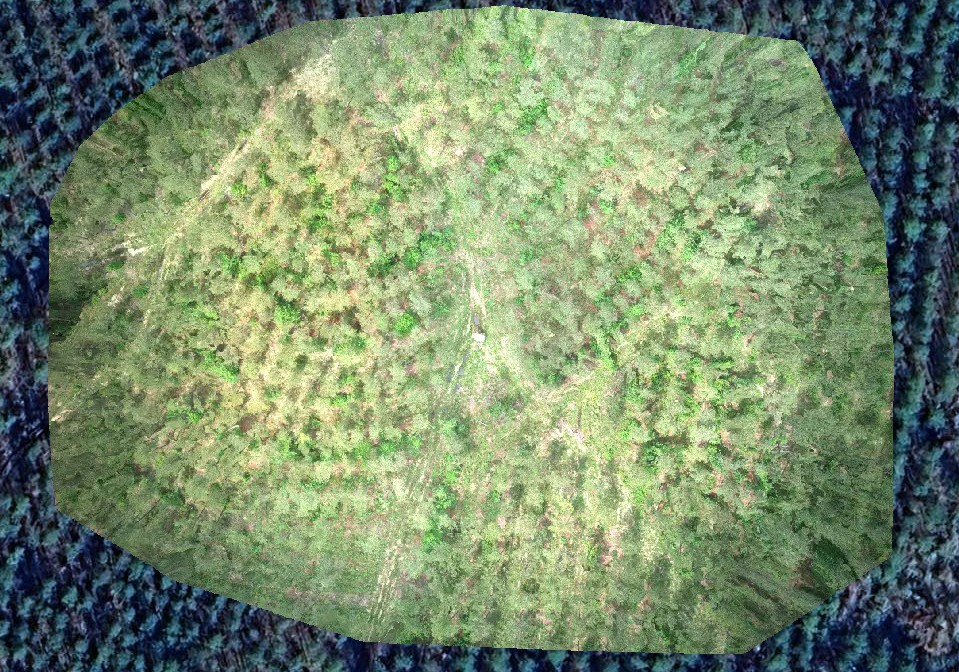
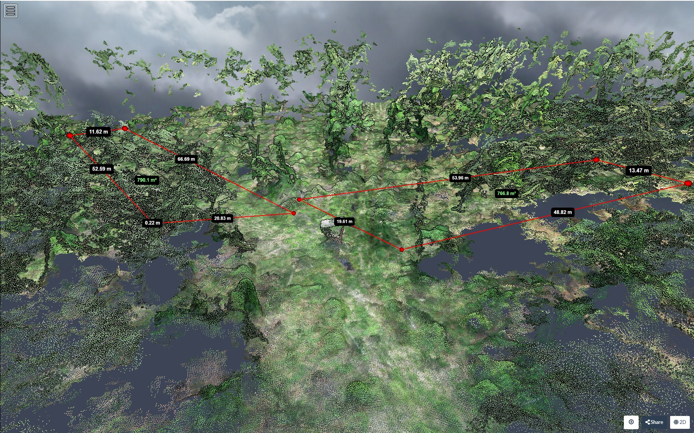
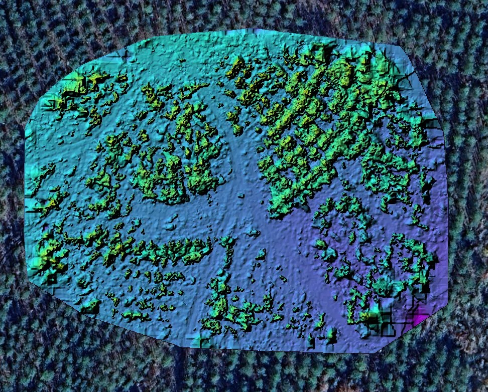
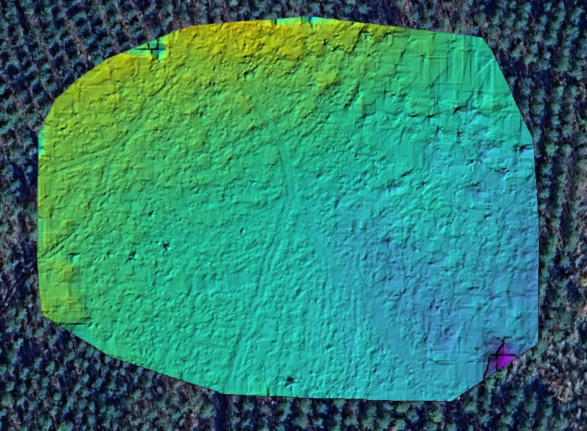

Project Outputs
3D Visibility Analysis Map

Final cartographic output showing visibility from the deer stand using a 3D photogrammetry-derived surface.
Orthophoto

Orthophoto generated from drone imagery, providing a high-resolution aerial view of the mapped area.
3D Point Cloud and Measurement View

3D point cloud view used to evaluate distances, surface structure, and visibility relationships across the site.
Digital Surface Model

Digital Surface Model representing surface features such as vegetation, canopy structure, and above-ground objects.
Digital Terrain Model

Digital Terrain Model representing the underlying ground surface after filtering above-ground features.